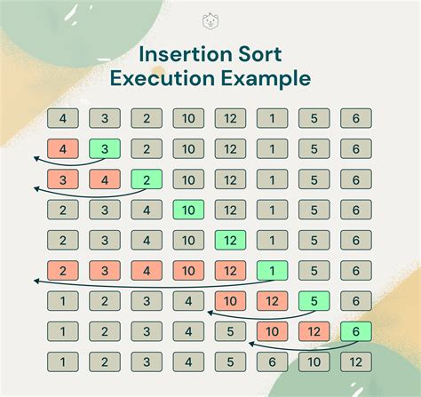

Алгоритам сортирања уметањем
Шта је алгоритам сортирања уметањем?
Сортирање уметањем (Insertion Sort) је једноставан алгоритам сортирања који функционише тако што елементе низа убацује на одговарајуће место у већ сортирани део низа.
Основне особине алгоритма
- Једноставан је за имплементацију
- Ефикасан је над малим и „довољно“ сортираним низовима
- Стабилан (одржава распоред убацивања поновљених елемената)
- Временска сложеност: O(n²)
- Просторна сложеност: O(1)
Академска тема - Документ
